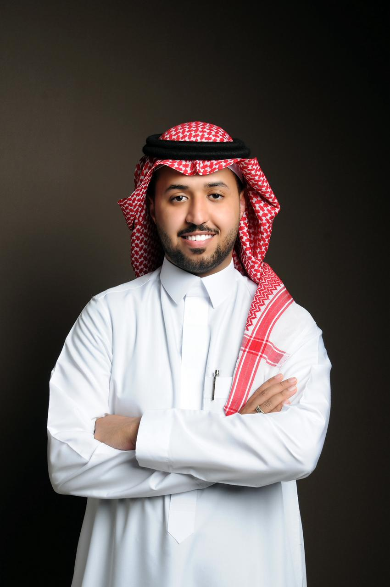

أخصائي نفسي إكلينيكي معتمد من الهيئة السعودية للتخصصات الصحية
بخبرة عملية في التقييم والتشخيص النفسي، وتطبيق المقاييس النفسية، وتقديم جلسات العلاج المعرفي السلوكي والعلاج بين شخصي. متخصص في علاج الإدمان وإعداد الخطط العلاجية والعمل ضمن فرق علاجية متعددة التخصصات في منشآت صحية معتمدة.
إدارة مشروع تكاتف لعلاج الإدمان، إدارة جودة رعاية مرضى الإدمان، مراجعة التقارير السريرية، ومتابعة مؤشرات الأداء العلاجي.
إجراء المقابلات الإكلينيكية، تطبيق المقاييس النفسية، وتقديم جلسات العلاج المعرفي السلوكي (CBT) والعلاج بين الأشخاص (IPT).
برامج تعافي وجلسات علاجية جماعية، ودعم مرضى الإدمان وأسرهم في بيئة علاجية متخصصة.
تصنيف الهيئة السعودية للتخصصات الصحية — تخصص علم النفس.